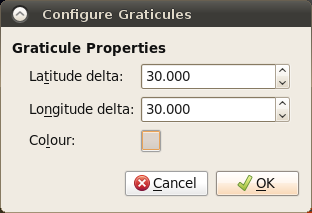

This chapter provides an overview of how to manipulate the view of the globe, and any displayed data or features.
1. Reconstruction View
The Reconstruction View is the region of the GPlates interface which deals with plate reconstructions back through time and is displayed below.

| Name | Description |
|---|---|
| Time Controls | A collection of user-interface controls for precise control of the reconstruction time and animations. |
| Zoom Slider | A mouse-controlled slider which controls the zoom level of the Globe View camera. |
| View Controls | A drop-down control for selecting the projection to be used for the view, and a precise percentage control for the camera zoom level |
| Camera Coordinate | An information field which indicates the current globe position of the Globe View camera |
| Mouse Coordinate | An information field which indicates the current globe position of the mouse cursor |
2. Tool Palette
The first two tools in the Tool Palette control your view of the GPlates globe or map. The Tool Palette includes camera positioning tools, feature selection tools and drawing tools. A tool is activated by clicking on it; only one tool can be active at any time. The Current Feature Panel will change to reflect the current tool that is activated.
Icon |
Tool |
Shortcut |
Operation |
|
Drag Globe |
D |
Drag to re-orient the globe. |
|
Zoom In |
Z |
Click to zoom in. |
3. View Menu
The View Menu enables the user to manipulate the globe, and includes the following options:

Clicking this menu item will open a dialog allowing you to select what projection GPlates should use to display data. A shortcut for this functionality can be found on the bottom of the Reconstruction View.
These menu items permit control of the camera position in order to view the globe.
3.1. Configure Text Overlay
GPlates can display the current reconstruction time within the globe area. Selecting this menu item opens the Configure Text Overlay dialog.
You can choose what text should be displayed, using %f as a placeholder for the reconstruction time. The text can be displayed in any of the four corners of the view.
3.2. Configure Graticules
With this menu item, the graticule spacing can be configured to use a different grid spacing than the default 30 degrees. The colour can also be changed if better contrast with a background raster is needed.

3.3. Choose Background Colour
This option can be used to select the background colour of the globe (or map in the map view).

|
|
If the value entered in the Alpha channel option is less than 255 then the globe will be semi-transparent and you will be able to see the rear of the globe (and geometries/rasters on the rear) through the front of the globe. |
3.4. Geometry Visibility
Selecting "Show Point/Line/Polygon/Multipoint Geometries" will prevent feature geometries of those types from being drawn on the globe.
Selecting "Show Arrow Decorations", when a Velocity layer is active, can be used to control the display of the velocity arrows.
4. Window Menu
The Window Menu enables the user to control the windows GPlates opens to display aspects of your data, and includes the following options:
Creates a new instance of GPlates. Currently each instance created this way is completely separate with its own main window and dialogs. Any program state such as files loaded prior to selecting New Window is not transferred across to the new instance. This feature is useful mainly for Mac OS X where it is not possible to run multiple instances of the same application from the Finder.
This option shows and hides the Layers window.
This option allows you to show or hide the Clicked Feature and Topology Sections tables.
This option opens a dialog that:
-
Displays low-level debug, warning and error messages in a dialog window.
-
Supports filtering of log messages with a text string entered by the user.
-
Supports copy and pasting log messages in order to, for example, email bug reports to the GPlates developers.
-
Removes duplicate messages - shows message once along with a count of the number of identical messages.

Makes the GPlates Main Window fill the entire screen, and hides most of the user interface elements such as the Tool Palette and Task Panel. A shortcut for this mode is the F11 key. This mode is ideal for doing presentations.
Tools can still be accessed via their keyboard shortcuts. While in full screen mode, a new GPlates logo button will appear in the top left hand corner. If you need to access the Main Menu, click this button.
To leave Full Screen mode, you can:
-
Press
F11again. -
Press
Esc. -
Click the Leave Full Screen button in the top right corner.
5. Manage Colouring
Currently, by default the geometry colouring is controlled by Python plugin. Go to Chapter 19: Python and read paragraph 3.1. Draw Style plugins for details.
| The following content of this paragraph is deprecated. It is only valid when you start GPlates with "--no-python" command line option. If you have no idea about the "--no-python" option, it is very likely that you should skip this paragraph and go to Chapter 19. |
The Manage Colouring operation, found on the new Features menu, opens the Manage Colouring dialog. It allows the user to customise how feature geometries are coloured.
To change the default colouring method for all feature collections, select (All) from the drop-down box at the top, then choose from one of the four major categories:
-
Colour by plate ID
-
Colouring all features with a single user-specified colour.
-
Colour by feature age (the time of the feature’s creation relative to the current view time)
-
Colour by feature type
Once you have done that, a number of different options will be available in the right-hand pane. Some of these support the inclusion of user-specified Colour Palette Files (.CPT). A few sample CPT files are included with the sample data.
For further customisation, you can choose to override these default colouring schemes for individual feature collections. Select the feature collection from the drop-down box, then uncheck Use Global Colour Scheme. You can now select a colouring scheme to be used for geometry originating from that feature collection.